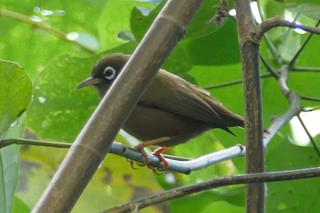

Zosterops oleagineus
The Olive-colored White-eye was first described by French ornithologist Louis Jean Pierre Vieillot in 1817 as Zosterops chloronothos. They can reach a size of about 10cm. Upperparts dull olive green, the belly and vent have a yellow hue. the underparts a paler colour and the eyes are surrounded by a conspicuous white ring.